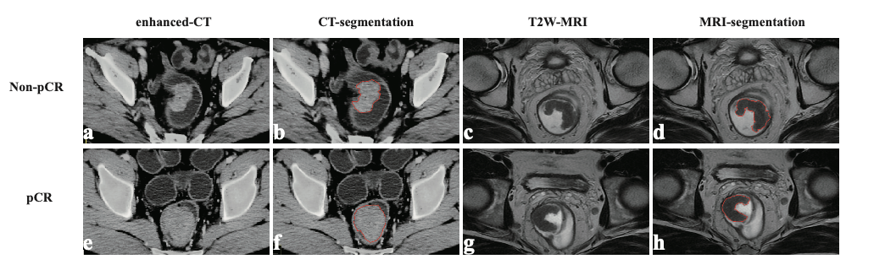

Zongchao Liu
About
I received a BS in Preventive Medicine from Shandong University in 2019 and an MS in Biostatistics in Mailman School of Public Health, Columbia University in 2021 (advised by Dr. Ying Liu and Dr. Guohua Li). I am passionate about the field of biomedical engineering, epidemiology and health data science. I am also preparing for applying to doctoral programs in epidemiology and health data science. The following are some of the research projects that I have been working on:
A Big Project for transformation between ICD-10-CM code and Clinical Classification Categories, Excessive Morbidity Assessment, as well as Cluster Analysis
Controlling FDR: A 3D-based interpretable deep learning framework for diffusion tensor brain imaging data
https://github.com/zl2860/3d-CNN-DTI


Radiomics analysis of computed tomography for predicting pathological response to neoadjuvant treatment in rectal cancer: Post-hoc Analysis of a Randomized Controlled Trial
https://github.com/zl2860/radiomics-R
 
Recent Selected Publications
- Liu ZC #, Wu WH #, Huang S, et al. Plasma lipids signify the progression of precancerous gastric lesions to gastric cancer: a prospective targeted lipidomics study. Theranostics 2022; 12(10):4671-4683.
- Liu ZC #, Wu WH #, Li ZX, et al. Effect of Helicobacter pylori eradication on blood metabolite fingerprints and their interactions on the progression of gastric lesions: a prospective follow-up study. Cancer Biology & Medicine. Accepted.
- Liu, Z. #, Lin, Z. #, Cao, W., Li, R., Liu, L., Wu, H., & Tang, K. (2021). Identify Key Determinants of Contraceptive Use for Sexually Active Young People: A Hybrid Ensemble of Machine Learning Methods. Children, 8(11), 968.
- Liu ZC, Li ZX, Zhang Y, Zhou T, Zhang JY, You WC, Pan KF, Li WQ. Interpretation on the report of Global Cancer Statistics 2020. Journal of Multidisciplinary Cancer Management (Electronic Version), 7(2): 1-13.
- Zhuang, Z. #, Liu, Z. #, Li, J., Wang, X., Xie, P., Xiong, F., … & Luo, Y. (2021). Radiomic signature of the FOWARC trial predicts pathological response to neoadjuvant treatment in rectal cancer. Journal of translational medicine, 19(1), 1-10.
- Li, X., Zheng, N. R., Wang, L. H., Li, Z. W., Liu, Z. C., Fan, H., … & Qin, J. (2021). Proteomic profiling identifies signatures associated with progression of precancerous gastric lesions and risk of early gastric cancer. EBioMedicine, 74, 103714.
- Li, W. Q., Qin, X. X., Li, Z. X., Wang, L. H., Liu, Z. C., Fan, X. H., … & Pan, K. F. (2022). Beneficial effects of endoscopic screening on gastric cancer and optimal screening interval: a population-based study. Endoscopy.
- Li, R., Hu, B., Liu, Z., Xu, S., Li, J., Ma, S., … & Liu, J. (2021). Insight into the effect of hospital-based prehabilitation on postoperative outcomes in patients with total knee arthroplasty: A retrospective comparative study. Arthroplasty Today, 10, 93-98.
- Huo, S., Wang, K., Liu, Z., Yang, Y., Hee, J. Y., He, Q., … & Tang, K. (2022). Influence of Maternal Exposure to Mass Media on Growth Stunting Among Children Under Five: Mediation Analysis Through the Water, Sanitation, and Hygiene Program. JMIR Public Health and Surveillance, 8(4), e33394.
- Liu Z., Li G., Excess comorbidities associated with autistic spectrum disorder diagnosis in pediatric hospital discharge records. 2021 APHA Annual Conference.
- Liu ZC, Huang S, You WC, Pan KF, Li WQ. Plasma lipids associated with gastric lesion progression to gastric cancer: a prospective lipidomics study. World Cancer Conference 2022. Accepted
Contact
Zongchao Liu
Fucheng Rd. 52, Haidian Dist., Department of Cancer Epidemiology, 100142, Beijing, China E-mail: zongchao.liu@outlook.com; zl2860@cumc.columbia.edu
Phone: 1-646-249-6941; 86-133-3286-5842